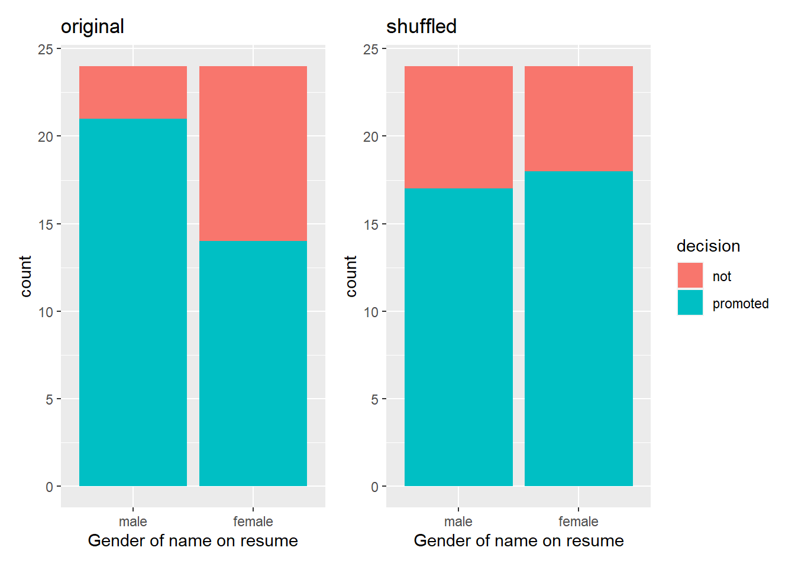
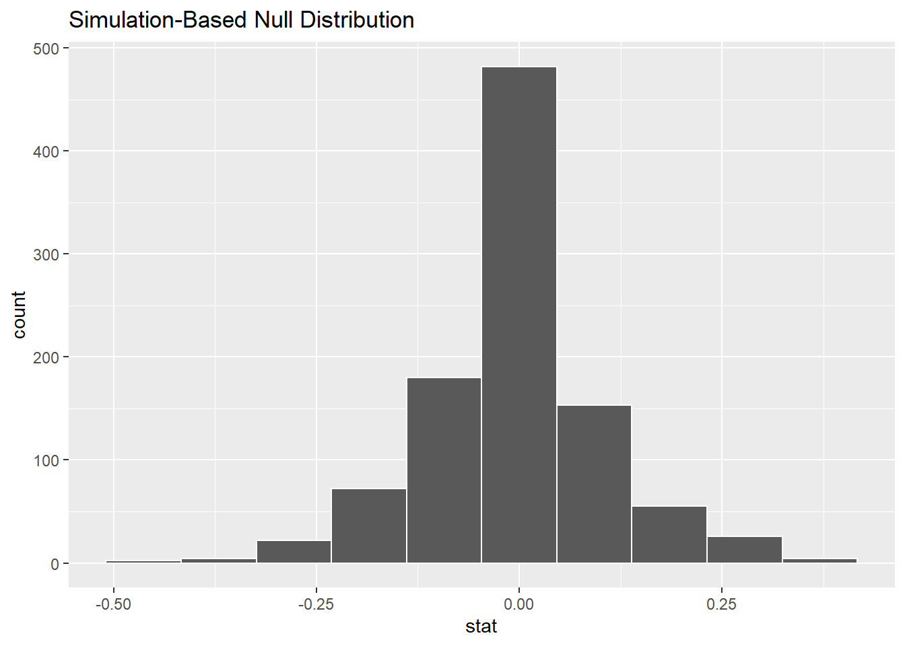
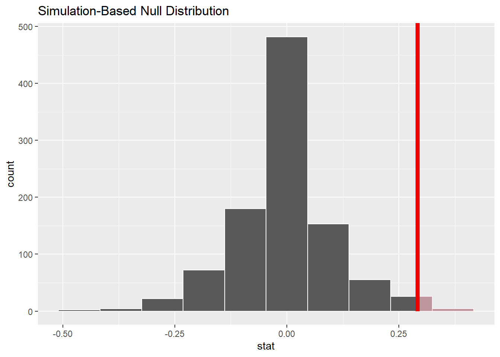

data from a Journal of Applied Psychology study published in 1974
48 bank supervisors asked to look at a resume
identical resume except the name at the top: 24 “female” names and 24 “male” names
promotions %>%sample_n(size =10) %>%arrange(id)
# A tibble: 10 × 3
id decision gender
<int> <fct> <fct>
1 2 promoted male
2 3 promoted male
3 4 promoted male
4 5 promoted male
5 11 promoted male
6 12 promoted male
7 13 promoted male
8 25 promoted female
9 34 promoted female
10 44 not female
ggplot(promotions, aes(x = gender, fill = decision)) +geom_bar() +labs(title ="Bank Promotions Study",subtitle ="identical resumes except for applicant name",caption ="Source: Journal of Applied Psychology",x ="Gender of name on resume")
# A tibble: 4 × 3
# Groups: gender [2]
gender decision n
<fct> <fct> <int>
1 male not 3
2 male promoted 21
3 female not 10
4 female promoted 14
male promotion rate: 21/24 = 0.875
female promotion rate: 14/24 = 0.583
difference in rates: 0.875 - 0.583 = 0.292
Shuffling
If gender did not matter when it comes to these job promotions, then it should not matter if we shuffle the gender labels in the data.
original_bar_graph <-ggplot(promotions, aes(x = gender, fill = decision)) +geom_bar() +labs(title ="original",x ="Gender of name on resume") +theme(legend.position ="none")gender_shuffled <- promotionsgender_shuffled$gender <-sample(promotions$gender) #sampled without replacementshuffled_bar_graph <- gender_shuffled %>%ggplot(aes(x = gender, fill = decision)) +geom_bar() +labs(title ="shuffled",x ="Gender of name on resume")original_bar_graph + shuffled_bar_graph

in the previous chapter, we did a bootstrap method that used sampling with replacement
here, we are performing a permutation test that uses sampling without replacement
Hypothesis Test of Proportions
“First, a hypothesis is a statement about the value of an unknown population parameter. In our resume activity, our population parameter is the difference in population proportions \(p_{m} - p_{f}\)”
“Second, a hypothesis test consists of a test between two competing hypotheses … Generally the null hypothesis is a claim that there really is ‘no effect’ or ‘no difference.’” Here our null hypothesis is
\(H_{0}\): men and women are promoted at the same rate
“Generally the alternative hypothesis is the claim the experimenter or researcher wants to establish or find evidence for and is viewed as a ‘challenger’ hypothesis to the null hypothesis”. Here our alternative hypothesis is
\(H_{a}\): men are promoted at a higher rate than women
“Third, a test statistic is a point estimate/sample statistic formula used for hypothesis testing, where a sample statistic is merely a summary statistic based on a sample of observations.” Here, our test statistic \(\hat{p}_{m} - \hat{p}_{f}\) estimates the parameter of interest: the difference in population proportions \(p_{m} - p_{f}\)
“Fourth, the observed test statistic is the value of the test statistic that we observed in real-life.” In this example the observed difference was
Response: decision (factor)
Explanatory: gender (factor)
# A tibble: 48 × 2
decision gender
<fct> <fct>
1 promoted male
2 promoted male
3 promoted male
4 promoted male
5 promoted male
6 promoted male
7 promoted male
8 promoted male
9 promoted male
10 promoted male
# … with 38 more rows
promotions %>%specify(formula = decision ~ gender, success ="promoted") %>%# "point" for single sample or "independence" for two sampleshypothesize(null ="independence")
Response: decision (factor)
Explanatory: gender (factor)
Null Hypothesis: independence
# A tibble: 48 × 2
decision gender
<fct> <fct>
1 promoted male
2 promoted male
3 promoted male
4 promoted male
5 promoted male
6 promoted male
7 promoted male
8 promoted male
9 promoted male
10 promoted male
# … with 38 more rows
null_distribution <- promotions %>%specify(formula = decision ~ gender, success ="promoted") %>%hypothesize(null ="independence") %>%generate(reps =1000, type ="permute") %>%calculate(stat ="diff in props", order =c("male", "female"))
# observed difference in proportionsobs_diff_prop <- promotions %>%specify(decision ~ gender, success ="promoted") %>%calculate(stat ="diff in props", order =c("male", "female"))obs_diff_prop
Response: decision (factor)
Explanatory: gender (factor)
# A tibble: 1 × 1
stat
<dbl>
1 0.292
visualize(null_distribution, bins =10)

visualize(null_distribution, bins =10) +# choices for direction are "right", "left", and "both"shade_p_value(obs_stat = obs_diff_prop, direction ="right")

null_distribution %>%get_p_value(obs_stat = obs_diff_prop, direction ="right")
# A tibble: 1 × 1
p_value
<dbl>
1 0.03
For NHST (null hypothesis significance testing), many scientists compare the p-value to a significance level of \(\alpha = 0.05\). Since the p-value < 0.05, we reject the null hypothesis of equal proportions of promotions among men and women.
Comparision to Confidence Intervals
bootstrap_distribution <- promotions %>%specify(formula = decision ~ gender, success ="promoted") %>%# Change 1 - Remove hypothesize():# hypothesize(null = "independence") %>% # Change 2 - Switch type from "permute" to "bootstrap":generate(reps =1000, type ="bootstrap") %>%calculate(stat ="diff in props", order =c("male", "female"))
percentile_ci <- bootstrap_distribution %>%get_confidence_interval(level =0.95, type ="percentile")percentile_ci
# since the data is in a CSV file, we will use the read_csv() function to load the datademo_df <-read_csv("demographics_survey_data.csv") str(demo_df, give.attr =FALSE)
spc_tbl_ [281 × 131] (S3: spec_tbl_df/tbl_df/tbl/data.frame)
$ enrolled : chr [1:281] "Bio 18" "Bio 18" "Bio 18" "Bio 18" ...
$ home : chr [1:281] "Southern California" "Northern California" "Southern California" "Central California" ...
$ ethnicity : chr [1:281] "Hispanic or Latino" "Black or African American" "Asian or Pacific Islander" "Hispanic or Latino" ...
$ classStanding : chr [1:281] "Junior" "Junior" "Junior" "Junior" ...
$ unitsCompleted : num [1:281] 40 70 63 80 48 68 63 80 90 88 ...
$ unitsThisSemester : num [1:281] 17 17 17 12 12 16 17 NA 13 16 ...
$ GPA : num [1:281] 3.1 3.25 3.61 3.4 2.5 ...
$ statsBefore : chr [1:281] "Yes: Math 15 at UC Merced" "Yes: AP Statistics" "Yes: Math 15 at UC Merced" "Yes: another (other than Math 15) statistics training course at UC Merced" ...
$ retakingWithDerek : chr [1:281] "No" "No" "No" "No" ...
$ learningStyle : chr [1:281] "Visual" "Kinesthetic" "Kinesthetic" "Visual" ...
$ hoursStudying : num [1:281] 3 12 4 4 6 5 10 NA 24 8 ...
$ birthdayMonth : chr [1:281] "June" "January" "August" "December" ...
$ height : num [1:281] 70 NA 63 68 55 59.5 66 NA 69 62 ...
$ shoeSize : num [1:281] 11 8 8 8 4.5 6 10 NA 10 6 ...
$ weight : num [1:281] 220 190 116 157 125 103 120 NA 220 135 ...
$ calories : num [1:281] 2000 1200 NA 1000 2500 1500 1700 NA 2800 1500 ...
$ exercise : num [1:281] 0 7 3 3 5 0 2 NA 0 6 ...
$ sodas : num [1:281] 3 0 0 0 0 2 0 NA 0 0 ...
$ alcohol : num [1:281] 2 1 0 0 12 2 0 NA 0 1 ...
$ sleep : num [1:281] 8 6 6 6 4 5 7 NA 7 7 ...
$ socialMedia : chr [1:281] "Google+" "Facebook,Instagram,Tagged" "Instagram,Pinterest" "Facebook,Instagram,Pinterest,Twitter" ...
$ smartPhones : chr [1:281] "iPhone" "Android" "iPhone" "iPhone" ...
$ baseball : chr [1:281] NA "San Franciso Giants" NA NA ...
$ football : chr [1:281] NA "San Francisco 49ers" NA NA ...
$ basketball : chr [1:281] NA "Golden State Warriors" NA NA ...
$ hockey : chr [1:281] NA NA NA NA ...
$ politics : num [1:281] 70 55 0 30 50 100 40 NA 0 0 ...
$ religious : num [1:281] 60 35 10 65 50 50 10 NA 0 80 ...
$ Kinsey : chr [1:281] "0" "0" "2" "0" ...
$ livingSituation : chr [1:281] "dormitory" "off-campus apartment in Merced" "dormitory" "commute outside of Merced" ...
$ roommates : num [1:281] 6 1 3 4 3 4 3 NA 5 1 ...
$ roommatesLiked : num [1:281] 0 1 0 4 2 4 3 NA 5 1 ...
$ hoursWorking : num [1:281] 0 8 8 0 8 0 0 NA 0 0 ...
$ happinessUCM : num [1:281] 80 70 60 75 50 60 70 NA 100 90 ...
$ happinessMercedCity : num [1:281] 70 45 40 60 30 30 60 NA 50 0 ...
$ transportation : chr [1:281] "car" "car" "car" "car" ...
$ counselors : num [1:281] 85 25 70 50 50 70 80 NA 80 70 ...
$ anxiousThisClass : num [1:281] 70 10 68 80 50 50 20 NA 10 60 ...
$ highSchoolType : chr [1:281] "public school" "private school" "private school" "public school" ...
$ anxiousTransitition : num [1:281] 80 95 20 25 50 40 80 NA 80 50 ...
$ drugs : chr [1:281] "No" "Yes" "No" "No" ...
$ diningCommons : num [1:281] 30 50 25 0 0 50 40 NA 51 30 ...
$ diningOptions : chr [1:281] "dining commons" NA "dining commons,Bookstore\\, Marketplace\\, and/or the Lantern" "Bookstore\\, Marketplace\\, and/or the Lantern,vending machines" ...
$ enrolled2 : chr [1:281] "Bio 18" "Bio 18" "Bio 18" "Bio 18" ...
$ UCMtopChoice : chr [1:281] "No" "Yes" "No" "Yes" ...
$ parties : chr [1:281] "No" "No" "No" "No" ...
$ firstGeneration : chr [1:281] "No" "Yes" "Yes" "Yes" ...
$ languages : num [1:281] 2 2 1.5 2.1 2 2 2 3 2.3 2 ...
$ parentsMarried : chr [1:281] "Yes" "Yes" "No" "No" ...
$ homesickness : num [1:281] 30 5 30 0 50 0 75 0 5 67 ...
$ safteyCampus : num [1:281] 70 80 100 98 90 20 90 50 60 90 ...
$ makingFriends : num [1:281] 70 100 75 79 50 10 80 100 70 50 ...
$ GreekLife : chr [1:281] "No" "No" "No" "No" ...
$ campusSports : chr [1:281] "Yes: sports club" "No" "No" "No" ...
$ anxiousOfficeHours : num [1:281] 20 70 100 45 80 30 80 0 90 45 ...
$ studyGroups : num [1:281] 40 90 50 70 90 10 15 100 85 100 ...
$ allowance : num [1:281] 0 NA 0 400 1000 0 400 0 0 125 ...
$ familyIncome : num [1:281] 70000 NA 30000 47000 68000 80000 NA 100000 20000 45000 ...
$ budgetHousing : num [1:281] 10 NA 80 0 60 20 NA 40 0 50 ...
$ budgetFood : num [1:281] 20 NA 10 30 25 20 40 30 20 25 ...
$ budgetTransportation: num [1:281] 20 NA 0 50 5 10 25 50 0 25 ...
$ budgetEducation : num [1:281] 20 NA 10 20 10 50 20 10 30 10 ...
$ retirementSavings : chr [1:281] "No" "No" "No" "No" ...
$ happiness : num [1:281] 60 95 50 80 70 10 85 80 65 50 ...
$ intelligence : num [1:281] 30 70 50 70 45 90 88 80 75 67 ...
$ attractiveness : num [1:281] 50 69 50 60 50 70 NA 30 100 60 ...
$ transferring : chr [1:281] "No" "No" "No" "No" ...
$ relationshipStatus : chr [1:281] "Single" "In a relationship" "Single" "In a relationship" ...
$ favoriteColor : chr [1:281] "Pink" "purple" "baby blue" "Tan" ...
$ favoriteNumber : num [1:281] 8 413 5 11 7 8 10 12 9 7 ...
$ happinessUCMcourses : num [1:281] 60 90 60 80 80 50 85 100 85 78 ...
$ showering : num [1:281] 7 3.5 6 6 5 7 6 5 8 5 ...
$ brushingTeeth : num [1:281] 14 7 14 14 14 10 14 20 14 5 ...
$ flossing : num [1:281] 6 7 1 5 10 0 NA 10 5 2 ...
$ washingHair : num [1:281] 7 3.5 7 6 5 7 6 5 3 3 ...
$ pets : num [1:281] 0 0 0 0 0 2 2 0 0 0 ...
$ homeVisits : chr [1:281] "holidays" "holidays" "holidays" "weekly" ...
$ UCMfinanialAid : num [1:281] 60 100 50 0 95 70 80 60 100 100 ...
$ careerConfidence : num [1:281] 85 70 30 79 0 30 50 90 75 86 ...
$ siblings : num [1:281] 3 2 3 3 4 2 3 1 4 1 ...
$ favoriteTV : chr [1:281] "Deathnote" "Crazy Ex Girlfriend" "Atlanta" NA ...
$ favoriteMovie : chr [1:281] "Howl\x92s Moving Castle" "Con Air" "Andre" NA ...
$ loneliness : num [1:281] 50 3 20 10 50 50 30 80 30 5 ...
$ organized : num [1:281] 55 50 50 80 50 100 80 70 85 67 ...
$ breakfast : chr [1:281] "No" "Yes" "No" "No" ...
$ snacks : num [1:281] 3 3 2 3 2 3 3 3 3 3 ...
$ mandms : num [1:281] 5 0 0 400 100 5 NA 50 7 20 ...
$ GPAhighSchool : num [1:281] 3.4 3.4 3.6 4 2.3 3.7 3.8 3.9 4.1 3.6 ...
$ SATscore : num [1:281] 1160 NA 1100 NA 900 1300 1200 600 1000 1050 ...
$ GreekLifeFuture : chr [1:281] "I do not plan to join a fraternity nor sorority" NA "I do not plan to join a fraternity nor sorority" "I do not plan to join a fraternity nor sorority" ...
$ campusGroups : num [1:281] 50 20 0 0 20 0 20 50 0 25 ...
$ procrastinator : chr [1:281] "Yes" "Yes" "Yes" "Yes" ...
$ enrolled3 : chr [1:281] "Bio 18" "Bio 18" "Bio 18" "Bio 18" ...
$ computerAccess : chr [1:281] "Laptop computer,Tablet" "Laptop computer" "Laptop computer" "Laptop computer,Tablet" ...
$ reddit : chr [1:281] "Yes" "No" "No" "No" ...
$ friends : num [1:281] 3 10 30 8 30 2 4 6 10 10 ...
$ musicStudying : chr [1:281] "No" "Yes" "Yes" "Yes" ...
$ thisClassCost : num [1:281] 0 0 NA 0 NA ...
$ BachelorsUCM : chr [1:281] "I plan on earning a bachelor's degree at UC Merced" "I plan on earning a bachelor's degree at UC Merced" "I plan on earning a bachelor's degree at UC Merced" "I plan on earning a bachelor's degree at UC Merced" ...
[list output truncated]
Smart Phone Loyalty vs Class Standing
null hypothesis: Sophomores and Juniors choose iPhones and Androids with the same proportions
alternative hypothesis: Sophomores and Juniors choose iPhones and Androids with different proportions